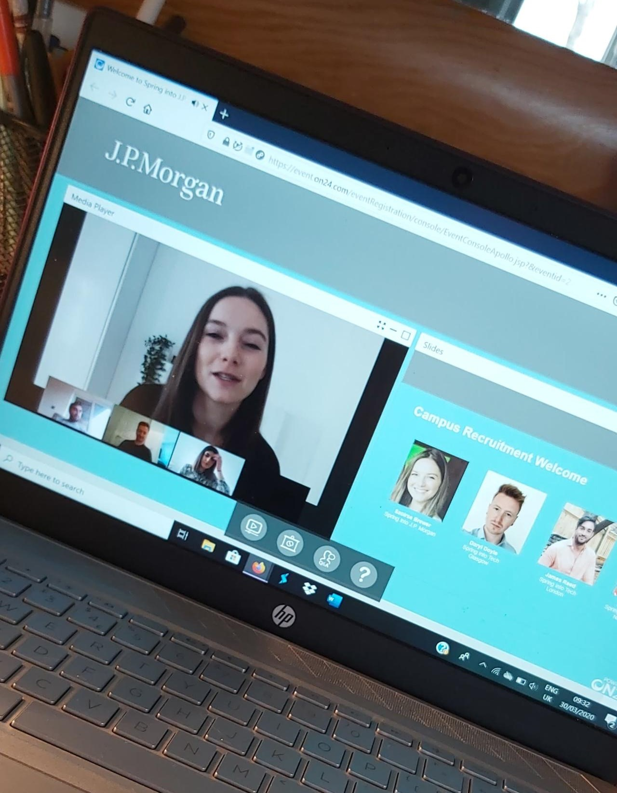

J.P.Morgan Chase Virtual Internship
First Virtual Internship

First Virtual Internship
I was fortunate enough to take part in Spring into Technology with JPM in April of 2020. It was a virtual and immersive week which dived into JPMorgan's culture. We were invited to join in on many panels that ranged on variety of subjects, from diversity and culture in JPM to sessions on how to apply to the company. During that week, I was invited to take part in Secure Code Warrior Tournament which allowed me to dip my toes in Cyber Security. We were also invited to take part in the JPM Virtual Internship that was hosted by Inside Sherpa.
 Unofrunately, I had multiple issues with completing the Virtual Internship during my Spring Weeek, but once I finished my college exams, I jumped straight into tackling it!
The Virtual Internship was based around visualising data of stock prices through Python and TypeScript. The internship did not take too long to complete but it definitely gave me a trial of what a real internship at JPMorgan would look like.
Through this I have learned: